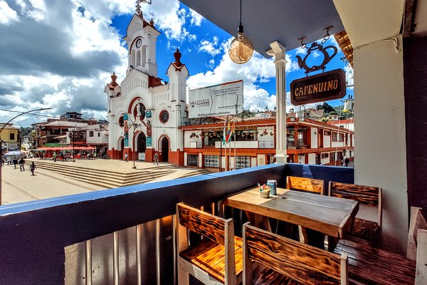

CIUDAD BOLIVAR

Que hacer?
- Salto para
- Quebrada de Pacheco
- Museo de Arte Jesus Soto Museo de Arte Jesus Soto

El Salto Pará, o Kuyuwishodü, como es conocido por los indígenas de la zona, es un accidente geográfico que rompe abruptamente el cauce del río Caura, estableciendo la división entre el bajo y el alto Caura. Existen opciones para realizar tours o recorridos de turismo aventura, desde el campamento más cercano, llamado El Playón, hasta el sector del salto, transitando un camino entre la selva.

Una cascada enorme, pero con rocas extremadamente lisas, por lo que es importante llevar calcetines. Hermosa cascada, la zona de baño también es bastante grande. Luego de bajarte del auto, caminas unos 8 minutos para llegar a la parte con más agua.
La colección de arte abstracto cinético es la mejor del país, y las obras de Soto que allí se encuentran son increibles, sobre todo las de su comienzo.
Donde comer?
Theos Restaurante

Es de esperar que los precios en este restaurante sigan siendo justos. Su silenciosa atmósfera ha sido muy comentada por sus visitantes. Theos Restaurante ha sido galardonado con un 4,5 de acuerdo con el baremo de valoraciones de Google
La Casa

El servicio y la atención lo hacen un sitio recomendado. Su personal es joven y atento. Para las fechas especiales preparan un menú diferente. Carnes, pollos, pescados, parrilla hacen parte de su carta.
Majos Repostería & Café

Disfruta de un refrescante cóctel con detalles nuestros, ideales para mejorar tus tardes o noches en el parque principal de Ciudad Bolívar